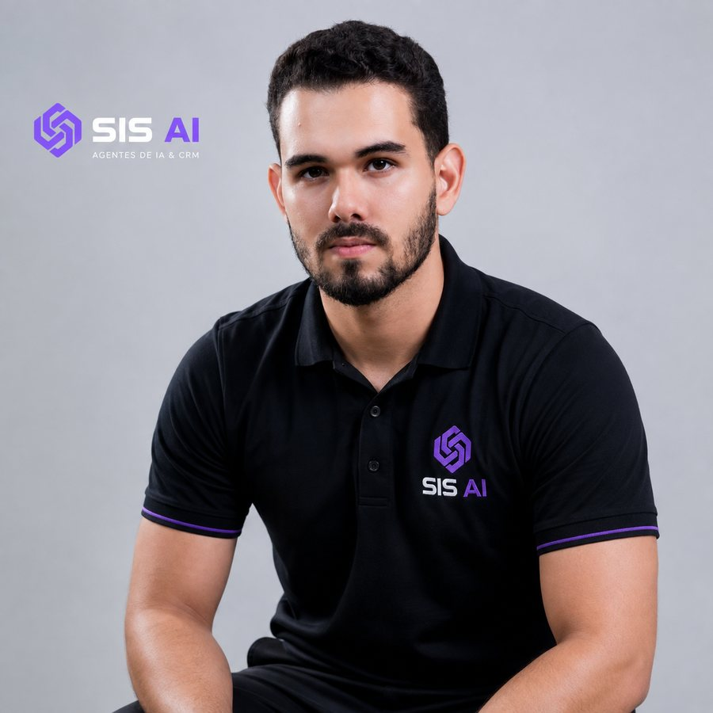

A SIS AI coloca um agente de inteligência artificial no seu WhatsApp. Ele responde em segundos, qualifica o lead, agenda a visita e faz o follow-up sozinho — sua equipe só entra pra fechar a venda.
Boa parte das mensagens cai à noite, no domingo, no feriado. Sem resposta na hora, o cliente segue pro concorrente — e não volta.
Responder em minutos multiplica a chance de fechar. Depois de uma hora, o interesse esfriou e a venda já era.
Você pagou pelo clique. Lead sem resposta é anúncio pago pro concorrente vender.
O agente 24/7 é o coração. Em volta dele, montamos a operação completa: tráfego trazendo lead, CRM organizando e painel mostrando o resultado.
Tráfego pago em Meta e Google com foco em custo por venda
Resposta em segundos, qualquer hora, qualquer canal
Coleta dados, entende o perfil e prioriza quem compra
Marca visita ou reunião direto na agenda do vendedor
Reengaja quem esfriou com sequências inteligentes
Tudo registrado no CRM e visível no painel
Enquanto o agente atende, o painel mostra o resultado: quantos leads entraram, quantos foram qualificados, visitas agendadas e o que precisa da sua atenção.
Estoque, leads e agente — em tempo real
Acompanhe do celular, de qualquer lugar — sem depender de relatório de ninguém.
A IA resolve o repetitivo e sinaliza apenas o que precisa da sua decisão.
Cada conversa, lead e agendamento registrado — histórico completo de cada cliente.

Empreendedor, estrategista e especialista em crescimento
Há mais de 4 anos, atuo no digital ajudando empresas a atrair clientes, automatizar processos e vender mais através de tecnologia, tráfego e inteligência artificial.
À frente da SIS AI, uno estratégia comercial, marketing e IA para criar operações mais rápidas, eficientes e previsíveis.
Meu foco não é apenas gerar leads. É construir sistemas que atendem, qualificam, acompanham e transformam oportunidades em vendas.
Tecnologia para vender mais.
Estratégia para crescer melhor.
Preencha o formulário e receba um diagnóstico gratuito — sem compromisso:
Vitrine online com todo o seu estoque — foto, preço, filtros por categoria e botão direto pro WhatsApp. Você mesmo edita: entrou produto, atualizou na hora. E é dele que a Estela puxa as informações pra atender.